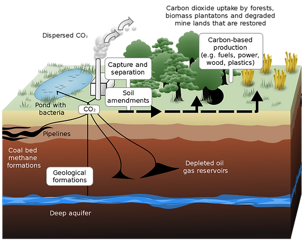

About
What are the 2 types of Carbon Capture Units? The effects of Carbon Capture Units both in general and in schools


Prototype
Look and understand how we create a prototype to simulate the process of Carbon Capture Units in schools through explanation and data collection!
Builder
Our Custom interactive builder can allow you to build and design your own Carbon Capture Unit! YES! You can build a Carbon Capture Unit virtually. Not only that, you get to learn what the components do!